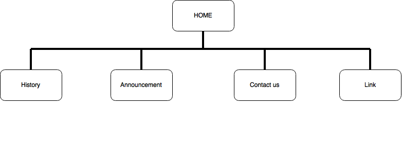

Kenny Anthony The
JC309977
The project is to create a website to increase revenue through promotion of the provided services and displaying announcements and relevant information on that website which reduces the needs for the staff to answer queries over the phone.
Advertising should be consistent and is the only major change for the website. Performance will be measured over 3 months period and the number of customers the business has will be the measure to the website's success.
Specifically adults between 28-50 years old, mostly corporate professionals to tertiary education students so the website does not need to be entertaining for children or cater to senior citizens, style will be straightforward.
